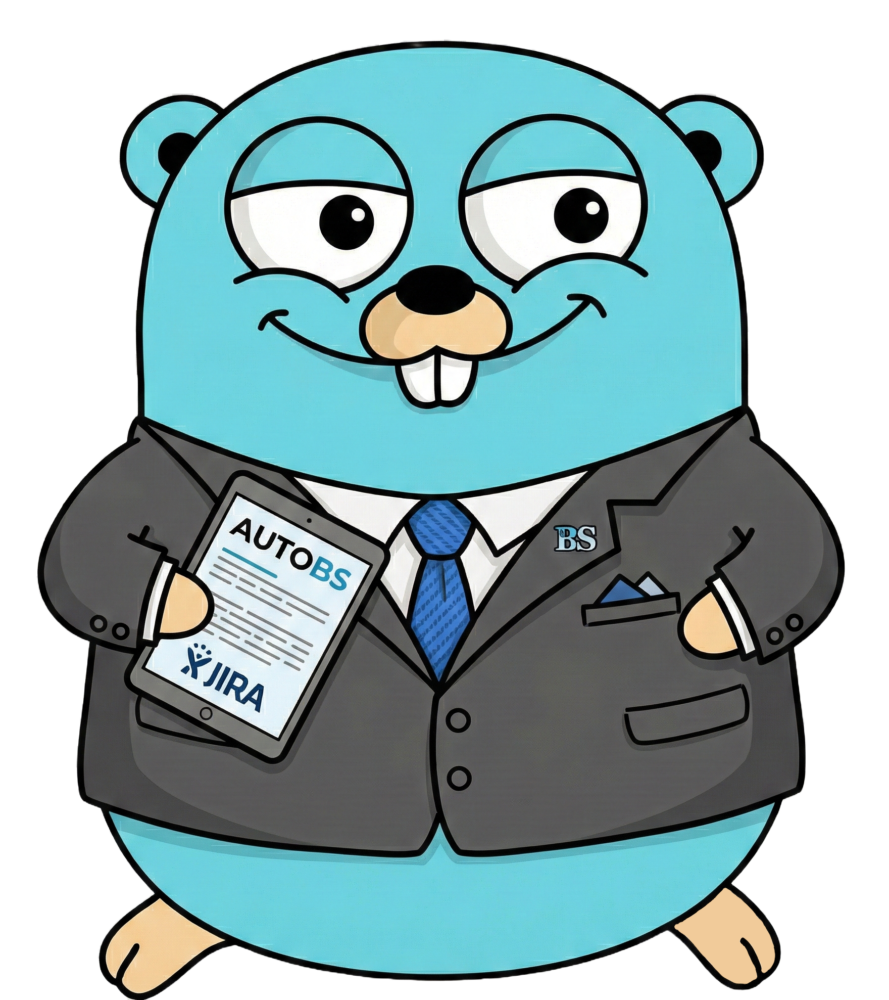

Because the most important part of your day shouldn't be explaining to Jira what you did in Git — let the robots write the corporate poetry.
Quick install
Scans today's GitHub commits so you don't have to remember what you actually shipped.
Feeds your commits to an LLM that converts fix: null ptr deref in auth middleware into "Enhanced platform stability."
Posts a professional, business-value-focused comment on every Jira ticket your commits reference. No browser required.
OpenAI, Gemini, or AWS Bedrock. Pick whichever one your company has already over-paid for.
Run autobs and go back to writing actual code. The stand-up update writes itself.
Preview the AI-generated corporate speak before it permanently pollutes your Jira tickets.
Fetches all your commits from today using the GitHub API. Yes, it knows you force-pushed at 11:59 PM.
Groups commits by Jira ticket ID (sniffed from commit messages), reads the ticket context, and asks your LLM to write a status update that sounds like a real human wrote it.
Fires off a comment on each Jira ticket. Your PM sees progress. You see freedom. Everyone wins.
I haven't manually updated a Jira ticket since I installed this thing. My manager thinks I've grown as a professional. I just wrote a regex.— A very real and totally not made-up senior engineer
curl -s https://autobs.coolapso.sh/install.sh | sudo bash
Run autobs configure — provide your GitHub token, Jira credentials, and LLM API key. Secrets stay local in ~/.autobs.json.
Run autobs at the end of each day. Go home. Sleep. Let the gopher do the paperwork.